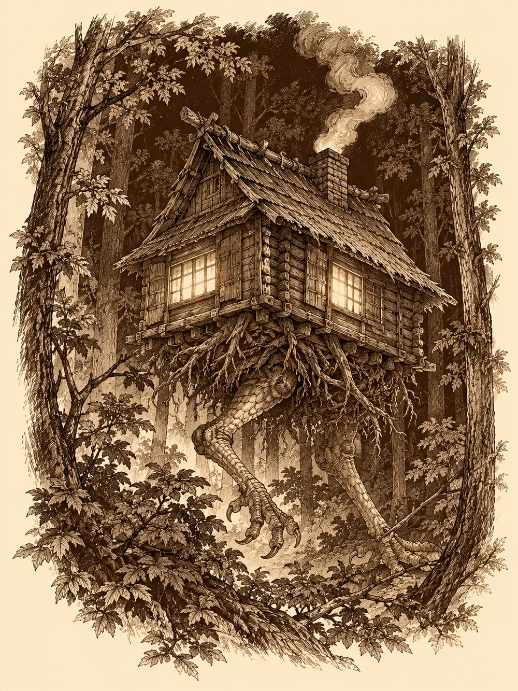

Capítulo 84
¿Dónde está Gur?
Libro VI · La Puerta Negra
Ermitaño llevaba días inclinado sobre libros que no le respondían. Quería saber qué hace el vientre de un demonio con lo que se traga, y ningún tratado de Sho se dignaba a aclararlo.
Danifae se le había pegado a la sombra durante aquellas jornadas y, cuando lo vio rendido, dejó caer la idea con suavidad: quizá había que buscar por otro lado. Un exorcismo, una expulsión, algo que mandara al demonio a su reino sin tanta espera.
"Eso lo enviaría lejos", contestó él, "y no creo que al compañero le guste perder a su maestro".
"Pero lo puedes traer de vuelta. Yo te veo un clérigo capaz". Le dio un codazo afectuoso. "Ya verás como sí".
La drow sonrió como si no hubiera oído la respuesta y entró la primera en la base.
Erk venía detrás con una botella de sake comprada antes de que la taberna echara el cerrojo. Desde el funeral de Sirth no había dejado del todo la bebida; visitaba a Shizuka, se marchaba sola a volar y volvía con plumas fuera de sitio y golpes que no sabía explicar. Higeki llegaba de las cocinas del shogunato, donde guisaba para un gobernante cada vez más delicado de salud.
Maroxi estaba sentado a la mesa con sus libros de alquimia abiertos, y al verlos entrar torció la boca en una mueca de decepción que no iba dirigida a ellos. Esperaba a otra persona. La palidez era la de siempre, pero tenía las ojeras más hundidas, los pómulos más marcados y el cuerpo más delgado, como si algo le hubiera ido quitando peso por dentro. Tosía sin sangre, con una tos que le cortaba el aliento a mitad de frase. Quien lo observó con ojos de sanador reconoció síntomas parecidos a los de un parásito que consume a su huésped desde dentro.
Erk se dejó caer en un banco, abrió la botella y bebió un trago largo.
"Te noto cambiada", le dijo Maroxi.
"Es que murió Sirth".
Ermitaño pidió permiso y apoyó las manos sobre el mago. La luz de Chauntea pasó por su piel con la fuerza que reservaba para los males más graves y no consiguió mover la enfermedad.
"No te preocupes", dijo el enfermo. "Estaré bien cuando Gur me traiga esas hierbas y me haga la poción".
Gur había salido por la mañana con una descripción de la planta y una hoja de muestra. Solo crecía al sur, fuera de la barrera que protegía el norte de Kuroto, donde el Antiguo Bosque se oscurecía y se convertía en un cenagal al pie de las montañas, un lugar poco seguro para cualquiera. Llevaba todo el día fuera y ya debería haber vuelto.
"Lo iremos a buscar", prometió Ermitaño. "Tú necesitas descanso".
Danifae se había colocado a la espalda del mago y le pasó el brazo por los hombros. Le acarició la nuca, le apartó un mechón y, con la uña larga del índice, le abrió en el cuello un corte tan fino que Maroxi lo sintió como un pelo enganchado y siguió leyendo. La gota de sangre quedó en la yema de la drow. Al apartarse envolvió la mancha en un pañuelo de tela y se lo guardó.
Salieron de Sho con la noche ya cerrada, entre comercios atrancados. Erk ofreció un trago a los guardias de la puerta, que lo rechazaron porque estaban de servicio.
"Una borracha con un arco nunca trae buena suerte", suspiró Danifae.
Caminaron varias horas. En algún momento que ninguno supo señalar, el bosque de las afueras cambió de naturaleza. Las ramas colgaban secas, las raíces se pudrían en la tierra empapada y en el aire había algo pesado, como si una fuerza enorme estuviera aplastando la vida de aquel lugar. Danifae veía en la oscuridad; los demás encendieron luces mágicas, y con aquel resplandor vieron una tierra negra y blanda y una madera húmeda que, seca, habría ardido como yesca.
Erk, que intentaba trepar a un árbol como si hubiera olvidado que tenía alas, dejó caer la botella sobre el pie de Ermitaño. Después recordó que podía volar, se elevó con un aleteo torpe y fue a posarse, con todo el estrépito del mundo, sobre el tejado de una casa.
Había una casa. Danifae la había visto antes que nadie: una cabaña pequeña levantada sobre algo parecido a raíces, con las ventanas encendidas y humo en la chimenea. La puerta se abrió y salió una anciana humana. Tenía la piel muy arrugada, apenas le quedaban dientes, llevaba el pelo revuelto y se envolvía en pieles de animales cosidas como una manta. Miró hacia arriba.
"¿Quiénes sois vosotros? ¿Y por qué estás en mi tejado?".
Erk asomó la cabeza boca abajo por el alero y la saludó.
La anciana los trató con una amabilidad que daba frío. Higeki se adelantó con confianza y, señalando hacia la sombra donde se había quedado Danifae, explicó que buscaban al novio de aquella chica: uno muy grande, muy fuerte, que solía ir con un yokai pequeño, rojo y con cuernos.
"Oh, sí. Ese chico tan amable me ha estado cortando leña para la casa", dijo la mujer. Y, volviendo la vista hacia la oscuridad, añadió: "Esa chica tan guapa de ahí también puede pasar".
La drow sonrió y entró en el resplandor.
Dentro, una chimenea pequeña daba toda la luz y todo el calor a una sala llena de botellas y comida. Erk se dejó caer en una silla que crujió y preguntó si había algo de beber. La anciana le sirvió en un vaso de cerámica un licor oscuro, parecido al vino, que le bajó por la garganta como una brasa. Ermitaño intentó despejarle la cabeza con su magia, pero no encontró veneno que limpiar; aquello era solo alcohol.
Danifae se acercó a la anfitriona con su voz más dulce y le aseguró que eran un grupo capaz, con un encanto que buscaba doblegar voluntades. La anciana la miró de reojo y se mostró complacida, aunque nadie habría sabido decir si por el encanto de la drow o por razones propias.
"Ya que estáis aquí, podréis entretener un rato a una vieja solitaria", dijo. "Unas adivinanzas pequeñas. Si acertáis, os diré hacia dónde se fue vuestro amigo".
Cuando Higeki propuso buscar primero a Gur y volver después, la mujer chasqueó la lengua: la información siempre tenía un coste.
"En la torre del hechicero, donde los conjuros vuelan, hay un objeto misterioso que el tiempo detiene y guarda. No tiene engranajes, pero los años atrapa. Su poder viene del desierto, aunque al verlo no destaca".
"Un reloj de arena", dijo Erk desde la silla, sin abrir del todo los ojos.
La anciana se levantó, abrió un cajón de uno de sus muebles de madera y le tendió un pequeño reloj de arena. Erk le dio la vuelta. "Muy interesante", oyó decir a la mujer. Le dio otra vuelta y volvió a oír, idéntico, "muy interesante". Lo dejó sobre la mesa y lo miró como si fuera a morderla.
"En lo alto del cielo, mi rostro nunca es el mismo. A veces lleno, a veces vacío, siempre reflejando la luz de algún conocido".
"La luna", respondió Higeki.
De una estantería salió una piedra pequeña, de un azul que despedía su propia claridad, y la mujer se la puso en la mano al bardo.
"En mi interior hay un mar, pero no hay barcos que lo crucen. Mis ríos no fluyen, aunque siempre puedas verlos. Mis montañas son altas, pero no se pueden escalar".
Hubo un silencio largo. Fue otra vez Erk quien lo rompió: un mapa. La anciana entró en la habitación y regresó con una brújula, que dejó entre las plumas de la aarakocra. Después se volvió hacia Danifae.
"Tú no has acertado ninguna".
"Somos un equipo".
"¿Tú crees?".

Al final cumplió. Gur se había ido hacia el norte, y por la noche aquellos lugares eran traicioneros. Danifae le sonrió: si una vieja sobrevivía allí, ellos también. La mujer soltó una carcajada con la boca abierta, una boca completamente negra y sin un solo diente.
Ya fuera, mientras se alejaban, oyeron crujir la madera. Las raíces sobre las que se levantaba la cabaña se estiraron, se irguieron y resultaron ser patas, patas escamosas de gallina, que alzaron la casa entera y se la llevaron entre los árboles. En unos segundos no quedó de ella ni el humo.
Danifae guiaba. Buscaba tocones limpios, la huella de un hacha, y solo encontró ramas rotas y arañazos profundos en las cortezas. En algún momento se habían desviado.
"No sé si la vieja nos ha mentido", dijo, con la palma en un tronco arañado, "pero este no es el camino. Y hay algo más por aquí".
Pidió la brújula a Erk. La aguja no marcaba el norte: se movió hacia atrás, osciló, dudó. Danifae pensaba en la esfera, pero algo en ella vacilaba. Sobre el ala de Erk, la aguja giró en círculos sin detenerse. En manos de Ermitaño señaló con firmeza hacia el sur.
"¿Qué es lo que más deseas?", le preguntaron.
"Acabar con Otakemaru".
Ermitaño comprobó que era un artefacto de adivinación. Cuando le tocó a Higeki, que deseaba ser reconocido como el bardo más grande que hubiera pasado por el mundo, la aguja se volvió hacia su propio pecho y lo siguió adondequiera que se girase.
El reloj de arena ya no repetía nada, por muchas vueltas que le dieran; parecía gastado. La piedra lunar le quemó los dedos a Danifae, que retiró la mano con un siseo. A Ermitaño, en cambio, no le hizo nada.
Alguien ató un cordel a la brújula y se la colgó a Erk del cuello. Vertical sobre su pecho, la aguja dejó de girar y apuntó hacia abajo. Nadie entendió por qué, y la aarakocra tampoco. Al fin habló de Sirth, de la dolencia que el clérigo se había llevado para salvarla a ella y de que, si él estaba muerto, la culpa era suya.
Nadie tuvo tiempo de contestarle. Entre los árboles crujieron ramas y llegó un aullido grotesco.
Danifae vio los ojos primero: brillos como los de un gato, pero mucho más grandes, en tres puntos distintos. Los envolvió en una tiniebla mágica tan espesa que nadie, ni siquiera ella, podía ver dentro. Después se deslizó fuera y se agazapó tras un árbol, invisible para todos. Erk alzó el vuelo hasta quedar muy por encima de las copas.
Desde allí arriba tampoco veía nada. Entonces algo subió hacia ella: una forma espectral con silueta de lobo y carne podrida que cruzó el aire y se le metió en la cabeza. El terror la atravesó con un dolor que no venía de ninguna herida.
Abajo, a ciegas, Higeki tocó unas notas que endurecieron el cuerpo de sus compañeros. Ermitaño, harto de no ver nada, deshizo la oscuridad. Y entonces los vieron: tres lobos enormes de carne podrida, con el pelaje a jirones y los huesos asomando, más muertos que vivos.
Ermitaño disparó un haz de luz contra el más cercano y conjuró un arma espiritual que flotaba y golpeaba sola. Higeki entonó una canción que protegía la mente y desenvainó su florete; un lobo fue derecho a por él y le clavó dientes y zarpas. Danifae surgió por el flanco, hundió en otro su arma con el poder de la araña y lo dejó clavado al suelo. Erk, temblando todavía, disparaba desde lo alto, y una de sus flechas pareció torcerse en el aire por obra del florete del bardo hasta clavarse entre los ojos de una bestia.
Ermitaño alzó el símbolo sagrado y pronunció una plegaria contra los muertos que no descansan. Dos de los lobos quisieron huir; el que la drow había clavado al suelo no pudo. Otro, al que el bardo intentaba hechizar, le lanzó una dentellada que en el último instante acabó cerrándose sobre su propia pata.
Cuando Danifae hundió una segunda daga, atravesó algo incorpóreo: el lobo se había desvanecido para reaparecer en otro lugar. Se trasladaban, resistían la magia y sembraban el miedo incluso entre los dos hombres que sostenían al grupo; el veneno de Erk no les hacía nada. Higeki perdió el hilo de su canción cuando una zarpa le abrió el costado, y al rato él y Ermitaño sintieron el terror reptarles por la nuca. La lucha se alargó. El clérigo extendió sobre los cuatro una oleada de curación, la drow saltó una y otra vez con sus dagas sobre la espalda de las bestias, y por fin el arma espiritual cayó sobre uno de los lobos, que se quedó inmóvil en el barro.
La bola de fuego vino de entre los árboles. Una línea de llamas corrió hacia ellos y el estallido les sacudió el pelo y las plumas; a duras penas lograron apartarse del calor. Detrás llegó girando en el aire un hacha enorme que partió por la mitad al lobo que tenía Higeki al lado.
"Ese es mi hombre", dijo Danifae.
Gur salió de la espesura con su torso enorme por delante y la mirada encendida. Kuma iba con él. La drow corrió a abrazarlo y el bárbaro, sin mirarla, le plantó la mano en la cara, una mano que se la cubría entera, y la apartó.
"Qué duro se ha vuelto", dijo ella.
El último lobo, malherido, se desvaneció y no volvió a aparecer. Cuando la furia se le pasó, Gur los miró como si fueran ellos los perdidos.
"¿Qué hacéis aquí? Este sitio es peligroso".
Estaba entero. Había cortado leña para una vieja muy simpática que le había dado de comer y después se había perdido. La hierba no la encontraba: todas le parecían iguales. Sacó del cinturón una hoja arrugada, arrancada de uno de los libros de Maroxi, con el dibujo de la planta. Era un hierbajo vulgar. Llevaban toda la noche pisándolo.
"¿Por qué no miras al suelo?", le dijo alguien.
Gur le tendió la hoja a Erk, y la aarakocra se puso a arrancar a manos llenas hasta llenar la mochila. Nadie sabía bien por dónde volver; habían dado demasiados rodeos. Le pusieron la brújula en la zarpa enorme y la aguja, por primera vez, se quedó quieta, firme, señalando hacia el sur. La drow se colocó delante de la flecha.
"Espera, que esto marca para allá", gruñó Gur, y la apartó por el hombro con suavidad. La aguja no se movió. "Te estás poniendo en medio".
Alguien murmuró que aquello debía de ser el camino a casa, y echaron a andar detrás de él.
Danifae caminó junto a Kuma todo el regreso, mirándole las manos, el vientre redondo, cada gesto del pequeño demonio rojo.
"¿Cómo va esa tripa?".
"Guardé la bola esa que me dijiste".
"¿Y no te duele?".
"No".
No hubo forma de sacarle más. Kuma notaba que la drow lo miraba demasiado, sin entender por qué.
Llegaron a Sho cuando el cielo empezaba a clarear por el este. Gur fue derecho a la base, porque eran las órdenes de Maroxi, y los demás lo siguieron. Dentro, el mago yacía inconsciente. Ermitaño se arrodilló para tomarle el pulso y tuvo que retirar la mano: la piel le abrasaba como una piedra al sol. Traían un saco de hierbas que nadie había preparado aún, y el enfermo había empeorado mientras ellos estaban fuera.
Danifae se volvió hacia Gur con toda la naturalidad del mundo.
"La taberna estaba abierta. ¿Quieres venir a tomar una cerveza?".
"¿Pero Maroxi está bien?".
"Ya lo están cuidando".
Gur miró al hombre tendido, luego a la drow, y dudó en el umbral mientras detrás de él Ermitaño volvía a acercar la mano al cuerpo ardiente.